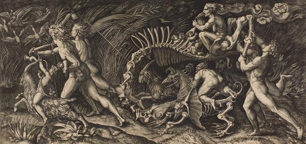
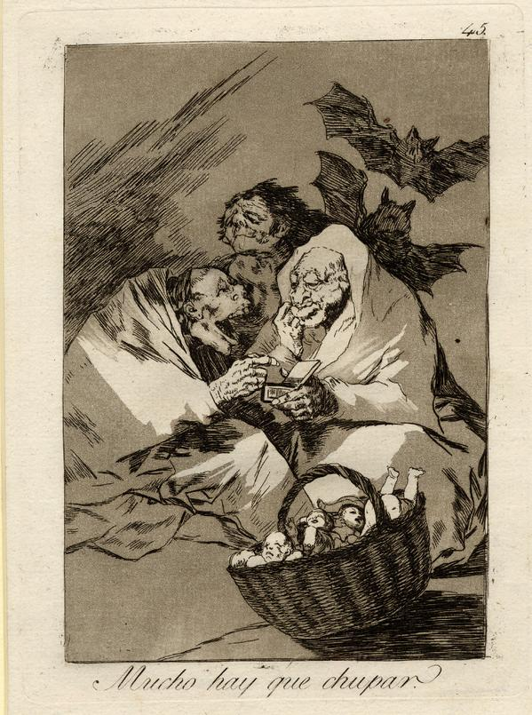

#WitchesAndWickedBodies Q&A
Curators Giulia Bartrum and Deanna Petherbridge joined us for a Twitter Q&A about the exhibition Witches and wicked bodies in Room 90 (25 September 2014 – 11 January 2015)
-
Don’t miss our Q&A with the curators of #WitchesAndWickedBodies , this morning at 11.00 GMT. Send us your questions! pic.twitter.com/iBnSTsVYG7
-
We’re here with #WitchesAndWickedBodies curators Giulia and Deanna for our Q&A. Send us your questions! pic.twitter.com/CpzVjGPfhJ
-
@britishmuseum Are there good witches in history or have witches always been seen as evil? #WitchesAndWickedBodies #Halloween
-
 #WitchesAndWickedBodies Curators Giulia and Deanna: witches were by definition evil beings. But... (1/2)
#WitchesAndWickedBodies Curators Giulia and Deanna: witches were by definition evil beings. But... (1/2) -
@britishmuseum Dear curators: what of the commonly used imagery & symbolism used in these depictions do you find most frightening and why?
-
How about this print by Goya showing hideous hags consuming newborn babies? #WitchesAndWickedBodies pic.twitter.com/RkhH0hTCub
-
Happy Hallowe'en Giulia and Deanna. How did you decide what angle to take with #WitchesAndWickedBodies to keep it fresh? @britishmuseum
-
Curator Giulia: images of witches when beautifully portrayed are always a revelation #WitchesAndWickedBodies
-
@britishmuseum Did individuals ever claim to be witches themselves? Or was it always a term used to make a scapegoat of a victim?
-
... A 'familiar' was a small monstrous animal, such as a cat, to whom the witch suckles #WitchesAndWickedBodies
-
@britishmuseum Why were wizard-hunts less popular? #WitchesAndWickedBodies
-
@britishmuseum Where did the stereotype of burning witches originate, given that it's a sentence properly aimed at heretics so that they 1/2
-
@britishmuseum 2/2 can come to salvation through their suffering? Were the two concepts intermingled, or is it cultural misunderstanding?
-
@britishmuseum Were there witch trials in Britain?
-
Certainly. The Berwick witch trials in Scotland (King James), the Pendle witch trials in Lancashire and many more. #WitchesAndWickedBodies
-
@britishmuseum What impact did the growth of print media have on the level of persecution? #WitchesAndWickedBodies
-
@britishmuseum Were particular types of women more at risk of accusations of witchcraft than others?
-
Old, poor and isolated women were particularly targeted as witches #WitchesAndWickedBodies
-
@britishmuseum When witch hunting came to end was there official acknowledgement of wrong doing and innocents killed? Any monuments in UK?
-
The last person prosecuted for witchcraft in the UK was Helen Duncan, imprisoned for 9 months in 1944. Read more here http://www. thetimes.co.uk/tto/opinion/co lumnists/article4253124.ece …
-
Thanks to our #WitchesAndWickedBodies curators Giulia and Deanna for answering your questions